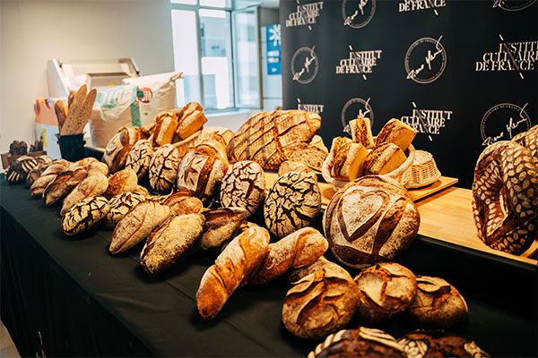

Atelier Pain au Levain
Durée : 3h | Tarif : 75€ | Places : 8 maximum
En savoir plus et réserverLa Boulangerie Le Pain Doré vous propose plusieurs services pour profiter de nos produits artisanaux : livraison à domicile, commandes en ligne, service traiteur et ateliers de boulangerie.

Recevez vos pains frais, viennoiseries et pâtisseries directement chez vous ! Notre service de livraison à vélo cargo dessert tout Paris et la proche banlieue.
| Zone | Délai | Frais | Franco |
|---|---|---|---|
| Paris 11ème (quartier) | 2h | Gratuit | - |
| Paris intra-muros | J+1 | 3,90€ | 25€ |
| Proche banlieue | J+1 | 5,90€ | 40€ |
Passez vos commandes en ligne 24h/24 et récupérez-les en boutique ou faites-vous livrer. Notre système de click & collect vous permet de gagner du temps.
Nous contacter pour commanderPour vos événements professionnels, réunions, séminaires ou fêtes privées, notre service traiteur vous propose des formules sur mesure.
Contactez-nous pour un devis personnalisé adapté à vos besoins.
Apprenez les secrets de la boulangerie artisanale avec nos ateliers de fabrication de pain. Encadrés par notre chef boulanger, ces ateliers sont accessibles à tous les niveaux.
Durée : 3h | Tarif : 75€ | Places : 8 maximum
En savoir plus et réserver
Durée : 4h | Tarif : 90€ | Places : 6 maximum
En savoir plus et réserverNotre équipe est à votre disposition pour répondre à toutes vos questions.
Nous contacter